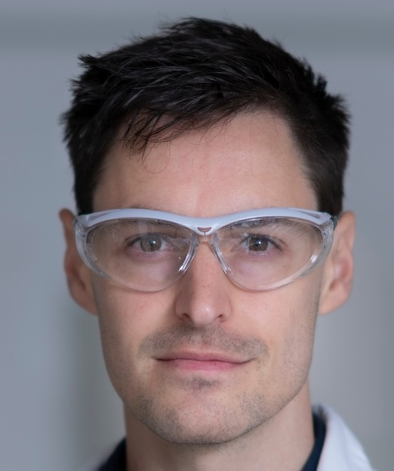

Affiliated Academics
Prof. Peter Anderson
Pro Vice-Chancellor (Indigenous)Professor Peter Anderson is a leading national scholar championing the integration of Indigenous perspectives, governance, and methodologies across university research programs.
Prof. Raymond Chiong
Professor of Artificial IntelligenceProfessor Raymond Chiong is a world-renowned AI expert specialising in applied machine learning and optimisation.
A/Prof. Kyle Mulrooney
Associate Professor in CriminologyAssociate Professor Kyle Mulrooney focuses on AI applications across criminal justice and higher education.
Prof. Mark Perry
Professor of LawProfessor Mark Perry is an internationally acclaimed legal scholar navigating the complex frameworks at the intersection of artificial intelligence, technology, and intellectual property.

Dr. Kasimir Gregory
Lecturer in Computational ChemistryDr. Kasimir Gregory drives the computational chemistry modeling and research that underpins our predictive AI architectures.
Amber Hocks
PhD Student in Computational ChemistryAmber Hocks is a PhD student contributing to the computational chemistry modeling that underpins our predictive AI architectures.